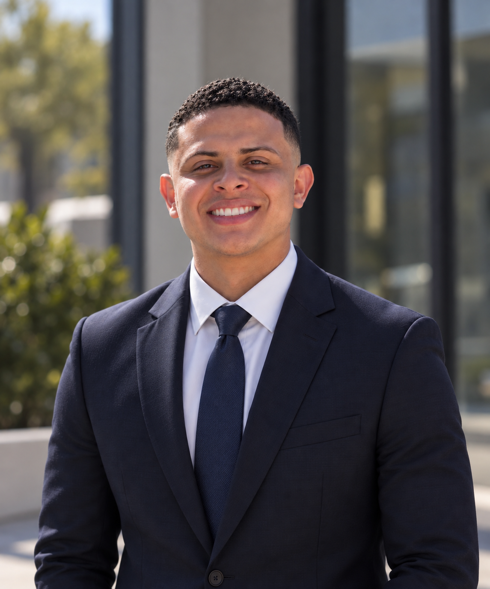

ABOUT ME / ROLANDO QUINONEZ
Bringing operational experience
to cybersecurity.
I’m an Army veteran, cybersecurity graduate and former transportation supervisor. I’m building a career in IT and cybersecurity, with a particular interest in governance, risk and compliance.
My professional background taught me to organize complex information, document decisions and keep people and procedures aligned. At Amentum, I led a team, developed SOPs and built Excel reporting tools for rail, air and other transportation operations. I also submitted and confirmed unit movements into and out of Fort Bliss and supported coordination involving government and local entities.

MY PROFESSIONAL FOUNDATION
People, procedures and reliable information.
Leadership and accountability
I have experience leading personnel, supporting training, documenting inspection findings and maintaining equipment accountability. As Battalion Master Driver, I oversaw four company driver-training and licensing programs covering approximately 500 Soldiers and authored the program SOP. I conducted four program audits of training packets and licensing records and supported an Army inspection that achieved a 100% rating.
Reporting and process improvement
I designed formula-driven Excel reports and trackers and worked on SOP improvements across transportation operations. My public portfolio uses synthetic illustrations rather than employer records.
Cybersecurity education
My academic work includes Windows Security Controls Assessment, authentication-log analysis, security-policy design and IoT privacy/governance research. I distinguish those learning environments from professional cybersecurity employment.
EDUCATION AND LEARNING
A foundation I’m continuing to build.
- Bachelor of Science in Cybersecurity
- American Military University · 2026
Concentration: Privacy and Surveillance - Graduate Certificate in Cybersecurity and Information Assurance
- DeVry University — Keller Graduate School of Management
In progress - Google Cybersecurity Professional Certificate
- September 2026
- Training Concepts
- Six CompTIA-aligned course completions · 324 hours
Project Management Professional Program · Completed September 2025 - Certification preparation
- CompTIA A+, Network+, Security+, Cloud+, Server+ and PMP · Exams not yet earned
- TryHackMe
- Introductory guided practice · View learning record
HOW I APPROACH WORK
Be clear about what the evidence supports.
I value practical explanations, traceable documentation and honest limitations. A written policy, a proposed control and evidence that a control operates are different things. My portfolio makes those distinctions visible.
Where I’m heading
I’m interested in Security Compliance Analyst and GRC opportunities, alongside IT analyst and security operations roles where I can build on my education and operational experience.
I am bilingual in English and Spanish.
Connect on LinkedIn ↗